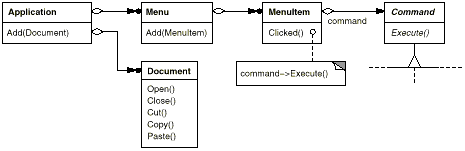
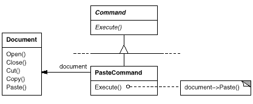
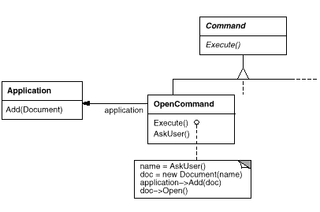
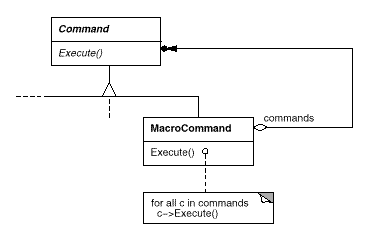
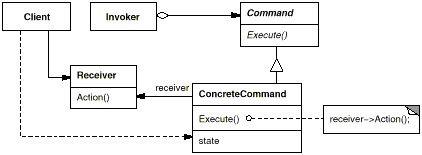
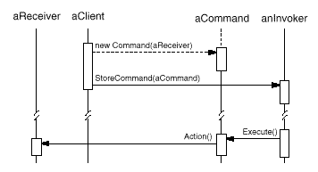

class Command {
public:
virtual ~Command();
virtual void Execute() = 0;
protected:
Command();
};
class OpenCommand : public Command {
public:
OpenCommand(Application*);
virtual void Execute();
protected:
virtual const char* AskUser();
private:
Application* _application;
char* _response;
};
OpenCommand::OpenCommand (Application* a) {
_application = a;
}
void OpenCommand::Execute () {
const char* name = AskUser();
if (name != 0) {
Document* document = new Document(name);
_application->Add(document);
document->Open();
}
}
class PasteCommand : public Command {
public:
PasteCommand(Document*);
virtual void Execute();
private:
Document* _document;
};
PasteCommand::PasteCommand (Document* doc) {
_document = doc;
}
void PasteCommand::Execute () {
_document->Paste();
}
template <class Receiver>
class SimpleCommand : public Command {
public:
typedef void (Receiver::* Action)();
SimpleCommand(Receiver* r, Action a) :
_receiver(r), _action(a) { }
virtual void Execute();
private:
Action _action;
Receiver* _receiver;
};
template <class Receiver>
void SimpleCommand<Receiver>::Execute () {
(_receiver->*_action)();
}
MyClass* receiver = new MyClass;
// ...
Command* aCommand =
new SimpleCommand<MyClass>(receiver, &MyClass::Action);
// ...
aCommand->Execute();
class MacroCommand : public Command {
public:
MacroCommand();
virtual ~MacroCommand();
virtual void Add(Command*);
virtual void Remove(Command*);
virtual void Execute();
private:
List<Command*>* _cmds;
};
void MacroCommand::Execute () {
ListIterator<Command*> i(_cmds);
for (i.First(); !i.IsDone(); i.Next()) {
Command* c = i.CurrentItem();
c->Execute();
}
}
void MacroCommand::Add (Command* c) {
_cmds->Append(c);
}
void MacroCommand::Remove (Command* c) {
_cmds->Remove(c);
}